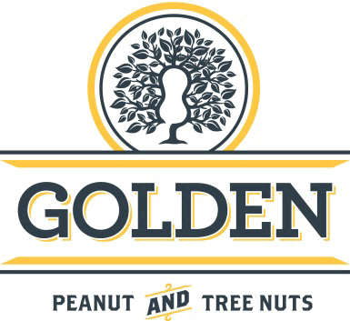
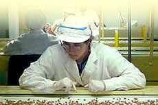
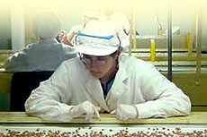

Ruta A 171
Tel/Fax +54 0358 498 0514 / 444
(2686) Alejandro Roca
Provincia de Córdoba, Argentina
info@goldenargentina.com
- Historia y Presente
- Misión y Principios
- Sistema de Gestión
- RSE, Políticas de Responsabilidad Social Empresaria

 

Sistema de Gestión
Nuestros procesos son llevados a cabo bajo un sólido Sistema de Gestión de Calidad, certificado bajo la norma ISO 9001:2008.
La inocuidad de nuestros productos es garantizada a lo largo de todo nuestro proceso, por un sistema HACCP desarrollado minuciosamente considerando las características propias de la materia prima y certificado por un organismo externo de prestigio internacional.
Se suma a lo anterior la implementación de un Sistema de Seguridad e Higiene que nos permite preservar el bienestar de nuestra mayor fortaleza, nuestra gente.
Política de Calidad y Seguridad Alimentaria
El compromiso de las personas que formamos parte de Golden Peanut and Tree Nuts es producir maní confitería y brindar servicios que satisfagan íntegramente los requisitos de nuestros clientes en forma consistente con nuestros principios.
Seleccionaremos y asistiremos a nuestros proveedores para que a su vez nos suministren productos y servicios que nos permitan cumplir con este compromiso.
Nuestra empresa proveerá los recursos y la capacitación necesarios para que todas y cada una de las personas de la Organización podamos contribuir, mediante el mejoramiento continuo, al logro de los objetivos de la Calidad.
Políticas de Seguridad
Golden Peanut and Tree Nuts considera sus empleados, la fuerza más importante de la empresa. Por esta razón y las condiciones de trabajo saludables, recibirán prioridad máxima con apoyo y participación de todos los niveles.
La Empresa define como objetivo de Prevención desarrollar todas sus actividades laborales en el marco de adecuadas condiciones de Seguridad e Higiene. De esta política surge que:
I. Todos los accidentes pueden y deben ser prevenidos.
II. Las causas que generan los accidentes pueden ser eliminadas o controladas.
III. La prevención de accidentes de trabajo es una obligación social indeclinable de todo el personal de la empresa, cualquiera sea su función, y de quienes se hallen transitoriamente en ella constituyendo, además, una condición de empleo.